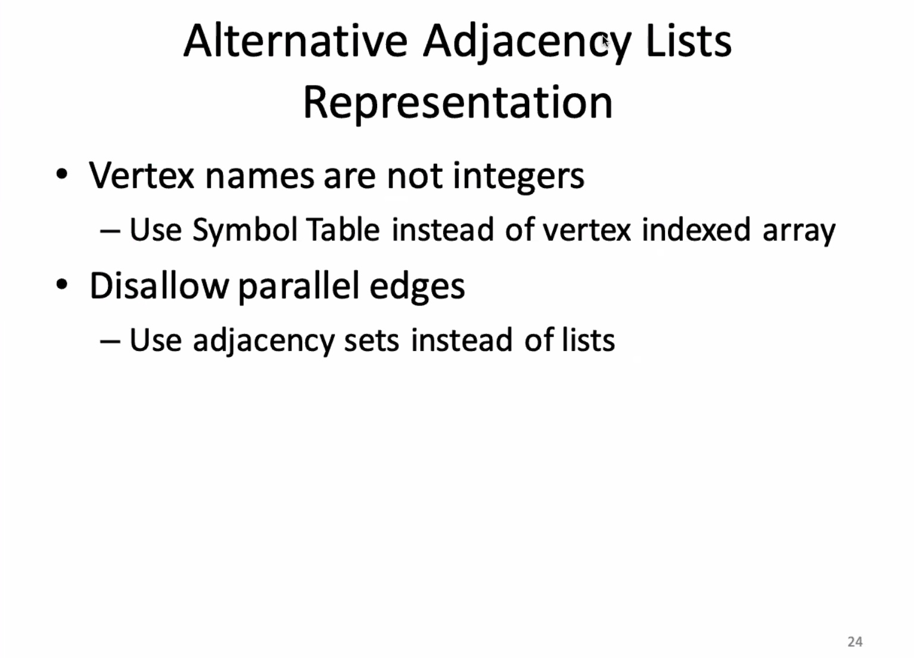
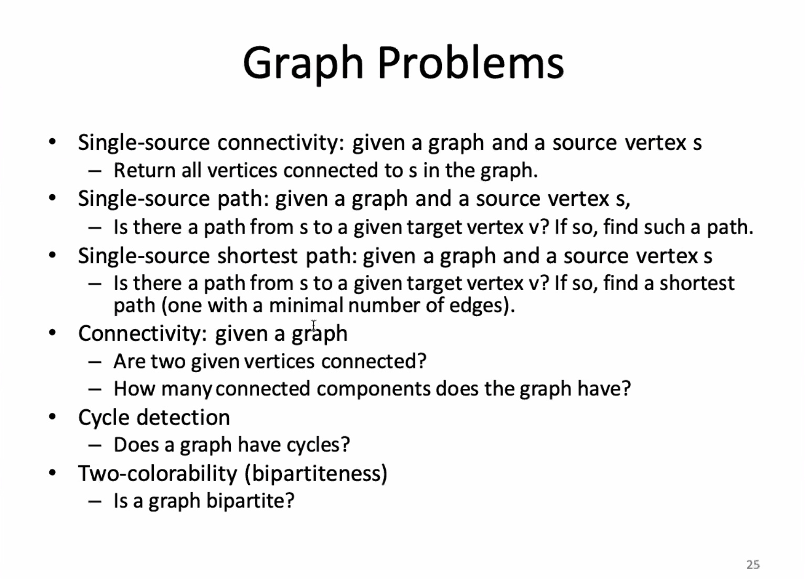
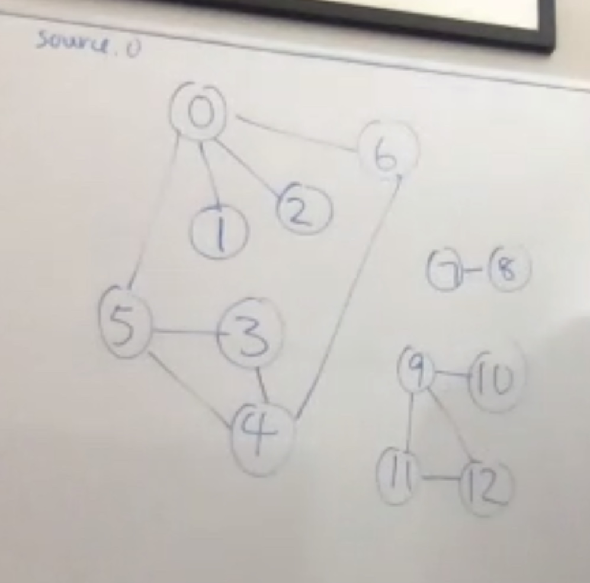

Answer:

If you have V, no self loop, no parallel edges, what is maximum edges?
Answer:
So if you have
Adjacency lists represent each edge twice, so the number of spaces taken (number of nodes) is
V−1


Depth-first search trace on whiteboard:


Count = 7 at the end. Runtime analysis is the sum of the degrees in the connected component. O(E) worst case runtime.
Back to the analysis of the algorithm:
Worst case space is from a linear graph: